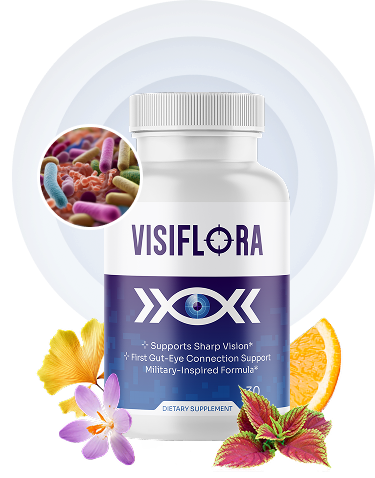

VisiFlora Avis 2026 : Le lien caché entre Vision et Intestin
Savez-vous que la santé de vos yeux dépend directement de votre microbiote intestinal ? C'est ce que révèle la dernière recherche en "Gut-Eye Axis". VisiFlora est le premier supplément à cibler cette connexion unique.
Pourquoi VisiFlora change la donne ?
Contrairement aux compléments classiques (Lutéine + Zinc) qui ne traitent que le symptôme, VisiFlora utilise une formule hybride :
- ✅ Probiotiques spécifiques pour l'absorption des nutriments oculaires.
- ✅ Antioxydants puissants (Lutéine, Zéaxanthine) pour protéger la macula.
- ✅ Support neurologique pour la connexion œil-cerveau.

VisiFlora - Formule Hybride Vision & Gut
- ✅ Rank #19 ClickBank (Top Vendeur)
- ✅ 60 Jours Garantie Satisfait ou Remboursé
- ✅ "Blue Ocean Offer" (Peu de concurrence)
Verdict FormeVital
Si vous avez plus de 50 ans et que vous sentez votre vision baisser malgré les carottes et les myrtilles, le problème vient peut-être de votre intestin. VisiFlora est la solution la plus innovante de 2026.
Avertissement : Ce site contient des liens d'affiliation. Nous pouvons toucher une commission sans frais supplémentaires pour vous.